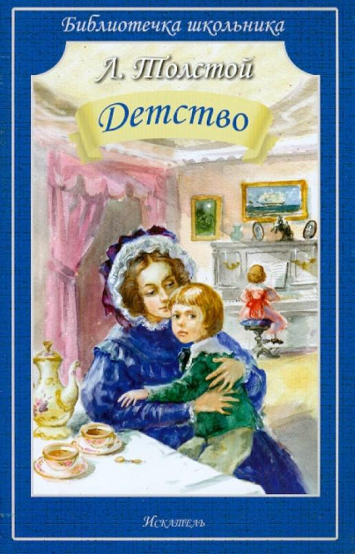
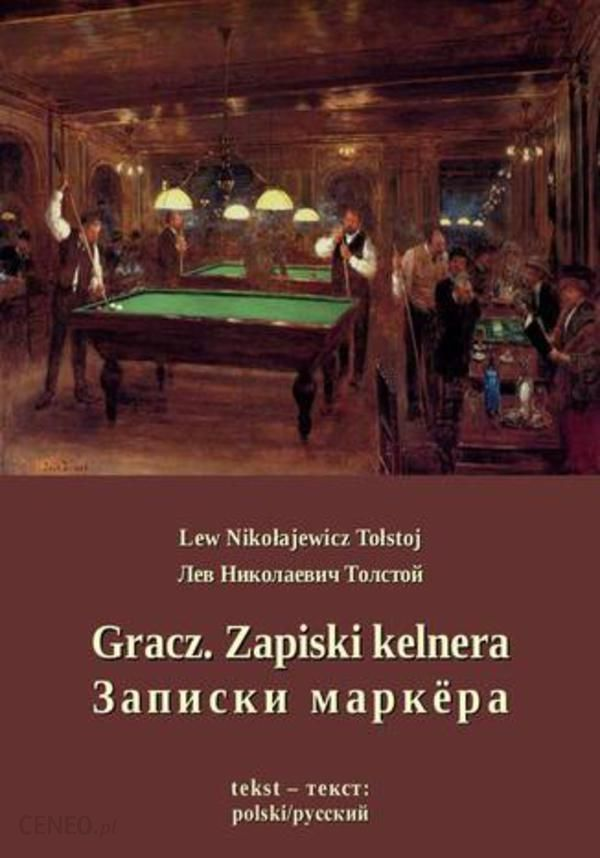
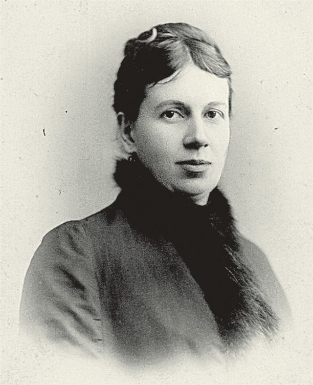
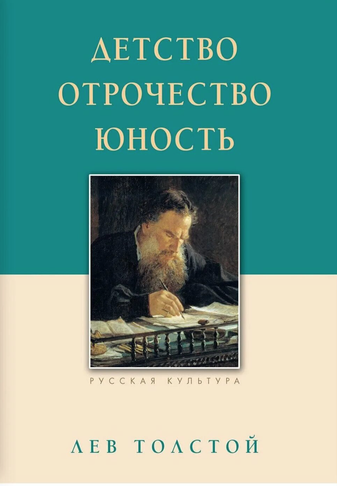

Семья

Тремя годами позднее, в 1855 году,
он пишет рассказ
«Записки маркёра»

, где уже прослеживается тяга литератора
к азартным играм и женщинам. Это же отражается и в его романе
«Семейное счастие»,


В период
счастливой семейной жизни (1860-е годы), создавшей стабильную атмосферу,
духовно-физический баланс и ставшей источником поэтического вдохновения,
были написаны два величайших произведения писателя: «Война и мир» и
«Анна Каренина». Но если в «Войне и мире» Толстой твёрдо отстаивает
ценность семейной жизни, будучи убеждённым в верности идеала, то в
«Анне Карениной» он уже выражает сомнения по поводу его достижимости.
Когда отношения в его личной семейной жизни стали более тяжёлыми,
эти обострения выразились и в таких произведениях, как
«Смерть Ивана Ильича», «Крейцерова соната», «Дьявол» и «Отец Сергий».
Лев Николаевич Толстой уделял семье большое внимание. Его размышления не
ограничиваются деталями супружеских отношений. В
трилогии «Детство», «Отрочество»
и «Юность»

автор дал яркое художественное описание мира ребёнка, в жизни
которого важную роль играют любовь ребёнка к своим родителям, и наоборот —
любовь, которую он получает от них. В «Войне и мире» Толстой уже наиболее
полно раскрыл разные типы семейных отношений и любви. А в «Семейном счастии»
и «Анне Карениной» различные аспекты любви в семье просто теряются за
силой «eros». Критик и философ Н. Н. Страхов после выхода романа «Война и мир»
отмечал, что все предыдущие произведения Толстого можно отнести к категории
предварительных исследований, завершившихся созданием «семейной хроники»
Лев Николаевич с юношеских лет был знаком с Любовью Александровной Иславиной, в замужестве Берс (1826—1886), любил играть с её детьми Лизой, Соней и Таней. Когда дочери Берсов подросли, Лев Николаевич задумался над женитьбой на старшей дочери Лизе, долго колебался, пока не сделал выбор в пользу средней дочери Софьи. Софья Андреевна ответила согласием, когда ей было 18 лет, а графу 34 года, и 23 сентября 1862 года Лев Николаевич женился на ней, предварительно признавшись в своих добрачных связях.
На некоторое время в его жизни наступает самый светлый период — он по-настоящему счастлив, во многом благодаря практичности жены, материального благосостояния, выдающегося литературного творчества и в связи с ним всероссийской и всемирной славы. В лице своей жены он нашёл помощницу во всех делах, практических и литературных — в отсутствие секретаря она по нескольку раз переписывала набело его черновики. Однако, очень скоро счастье омрачается неизбежными мелкими размолвками, мимолётными ссорами, взаимным непониманием, которое с годами лишь усугублялось.
Для своей семьи Лев Толстой предложил некоторый «план жизни», согласно которому он предполагал часть дохода отдавать на бедных и школы, а образ жизни своей семьи (жизнь, пища, одежда) значительно упростить, при этом также продать и раздать «всё лишнее»: фортепьяно, мебель, экипажи. Его супругу, Софью Андреевну, такой план явно не устраивал, на почве чего у них вспыхнул первый серьезный конфликт и начало её «необъявленной войны» за обеспеченное будущее своих детей. А в 1892 году Толстой подписал раздельный акт и передал своей жене и детям всю недвижимость, не желая быть собственником. Тем не менее вместе они прожили